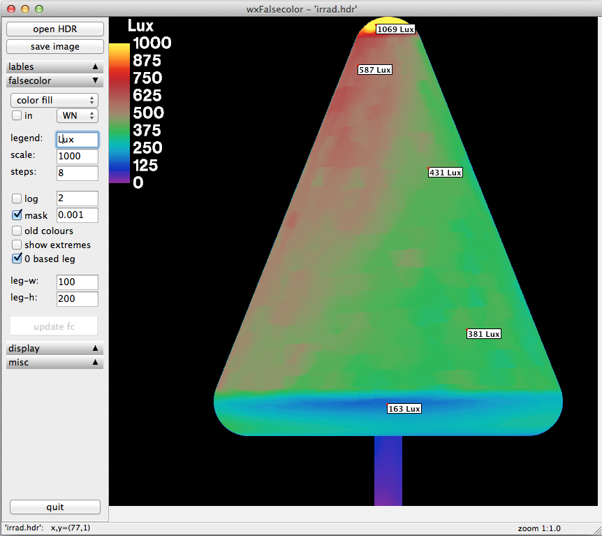

A wxPython GUI for the Radiance falsecolor2 tool
This project is maintained by tbleicher
A wxPython GUI for the Radiance falsecolor2 tool

Latest binary packages can be found in the Releases section.
On Windows simply drag-and-drop a Radiance *.hdr file on the executable.
To start from the command line:
python wxfalsecolor.py [image.hdr]
falsecolor2 is a Python rewrite of the falsecolor c-shell script in the Radiance distribution. The main purpose was to have a falsecolor script for Windows but I added a few extra bits on the way.
wxfalsecolor is a graphical frontend to falsecolor2. It also implements a few features of ximage so it can be used to display Radiance RGBE images and read luminance/illuminance values.
Like the original, falsecolor2 relies on the Radiance image tools which you need to have installed on your system.
falsecolor2 supports all features of the original falsecolor. I have added a few new features and some of the original features behave a bit differently:
-cb creates a falsecolor image of discreet colours instead of an obese variation of contour lines.-h shows a summary of the command line options. This option does not create an image but prints a help message to stdout (terminal).-lp allows you to specify the legend position; legends above and below the image are horizontal instead of vertical.-mask <minvalue> masks all values below minvalue with the background color (black).-z creates legends starting at 0-s auto option for automatic legend scale adjustmentWith wxfalsecolor you can
falsecolor2 options interactivelypcond options interactivelyximage)To open a file simply drag a Radiance HDR image on the executeable (Windows) or start the application from the command line (OS X and Linux):
python wxfalsecolor.py [image.hdr]
Detailed usage information is on the wxfalsecolor - Usage page.
The code base was migrated from the original 'pyrat' repository on code.google.com and copied into this repository dedicated to wxfalsecolor.